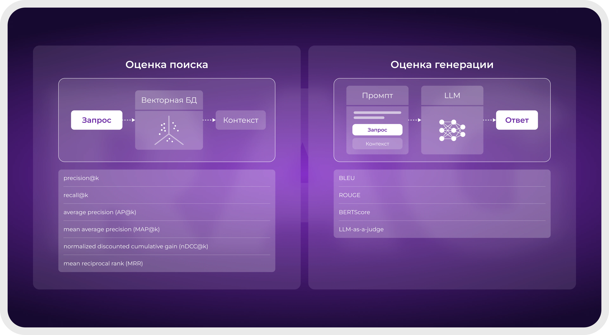
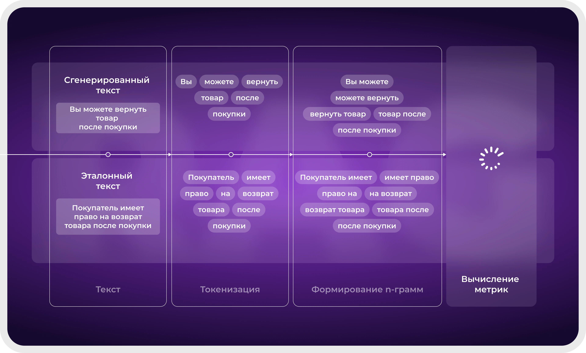

1. Зачем оценивать качество
Когда RAG-система построена, возникает закономерный вопрос: насколько хорошо она работает? Ответ на него нужен не просто для отчёта, а для принятия конкретных решений. Оценка качества позволяет сравнивать разные варианты системы — разные модели эмбеддингов, способы разбиения текста, промпты — и выбирать лучший. Она помогает находить слабые места и понимать, что именно нужно улучшать. И наконец, она даёт уверенность, что система готова к использованию реальными пользователями и не будет давать неприемлемо плохих ответов.
Однако оценка RAG-систем — задача непростая. В отличие от классических задач машинного обучения, где есть чёткий правильный ответ, здесь мы имеем дело с открытой генерацией текста. Ответ может быть правильным по сути, но сформулирован иначе, чем в эталоне. Может быть частично правильным. Может содержать лишнюю информацию. Может быть правильным, но не основанным на контексте. Поэтому одного простого метода оценки недостаточно — нужен комплексный подход.
2. Компоненты RAG-системы и что оценивать
RAG-система состоит из нескольких компонентов, и качество каждого влияет на итоговый результат. Можно выделить три основные точки оценки: качество поиска, качество генерации и качество всей системы в целом.
Качество поиска отвечает на вопрос: насколько релевантные документы мы находим для ответа на запрос? Если поиск плохой, языковая модель получит неверный контекст и не сможет дать правильный ответ, даже если она очень мощная. Качество генерации оценивает, насколько хорошо языковая модель справилась с задачей: правильно ли использовала контекст, нет ли галлюцинаций, насколько ответ полезен и полон. Интегральное качество смотрит на систему целиком: доволен ли пользователь, решена ли его проблема.
3. Оценка качества поиска
Для оценки поиска нужен тестовый набор данных, состоящий из запросов и списка идеальных документов, которые должны быть найдены. Такой набор можно создать вручную (эксперты размечают, какие документы релевантны каким запросам) или автоматически (например, генерируя по документам вопросы с помощью языковой модели).
Основные метрики для оценки поиска:
Recall@k (полнота на уровне k) показывает, какая доля всех релевантных документов попала в первые k результатов. Например, если всего релевантных документов 10, а в топ-5 нашлось 3, то Recall@5 = 0,3. Эта метрика важна для RAG, потому что языковая модель видит только топ-k документов. Если релевантный документ не попал в топ, у модели нет шансов ответить правильно.
Precision@k (точность на уровне k) показывает, какая доля документов в первых k результатах действительно релевантна. Например, если из 5 найденных документов релевантны только 2, то Precision@5 = 0,4. Эта метрика важна, чтобы в контекст не попадал «мусор», который может сбить модель.
MRR (Mean Reciprocal Rank) оценивает, на каком месте в выдаче находится первый релевантный документ. Если первый релевантный документ на позиции 1 — вклад 1, если на позиции 3 — вклад 1/3, если не нашёлся — 0. Затем усредняется по всем запросам. MRR особенно полезен, когда пользователю нужен один правильный ответ, а не несколько релевантных документов.
NDCG@k (Normalized Discounted Cumulative Gain) учитывает не только релевантность, но и порядок документов, причём релевантность может быть градуальной (нерелевантный, частично релевантный, полностью релевантный). Эта метрика наиболее сложная, но и наиболее информативная, если релевантность имеет градации.

4. Оценка качества генерации
Оценить сгенерированный текст гораздо сложнее, чем список документов. Здесь возможны несколько подходов, которые дополняют друг друга.
Автоматические метрики по эталонам — это традиционные метрики из машинного перевода и суммаризации: BLEU, ROUGE, METEOR, BERTScore. Они сравнивают сгенерированный ответ с эталонным (правильным) ответом, подготовленным экспертом. BLEU и ROUGE основаны на совпадении n-грамм (последовательностей из n слов), что позволяет оценить дословное сходство. BERTScore использует эмбеддинги для сравнения смысла и лучше справляется с перефразированиями. Главный недостаток этого подхода — необходимость эталонных ответов, которые дорого готовить, и чувствительность к перефразированиям.
Оценка без эталонов проверяет отдельные аспекты качества без правильного ответа. Например, можно проверить, содержит ли ответ факты, которых нет в контексте — это называется галлюцинация. Для этого используются дополнительные модели, которые сверяют каждое утверждение в ответе с контекстом. Также можно оценивать полезность ответа, его полноту и релевантность вопросу, но эти оценки обычно более субъективны.
LLM-as-a-judge — современный подход, где сильная языковая модель выступает в роли оценщика. Ей подаётся запрос, контекст, сгенерированный ответ и инструкция — оценить ответ по заданным критериям (например, по шкале от 1 до 5). Исследования показывают, что такой подход хорошо коррелирует с оценками людей, особенно при использовании самых мощных моделей вроде GPT-4, и значительно дешевле найма экспертов.

5. Комплексные метрики для RAG
Существуют метрики, специально разработанные для RAG-систем. Они учитывают и поиск, и генерацию в связке, давая более полную картину.
Faithfulness (достоверность) проверяет, все ли утверждения в ответе могут быть подтверждены контекстом, который получила модель. Если модель сказала то, чего нет в найденных документах, — это нарушение достоверности, то есть галлюцинация. Метрика измеряется как доля утверждений в ответе, которые выводятся из контекста. Это, пожалуй, самая важная метрика для RAG, так как она напрямую отвечает на вопрос, не выдумывает ли модель факты.
Answer Relevancy (релевантность ответа) оценивает, насколько ответ соответствует заданному вопросу, не уходит ли в сторону, не отвечает ли на что-то другое. Ответ может быть достоверным (все факты из контекста), но при этом не отвечать на вопрос пользователя — и это будет плохой ответ.
Context Relevancy (релевантность контекста) оценивает, насколько извлечённые документы релевантны вопросу и содержат ли они лишнюю информацию, которая могла отвлечь модель. Низкая релевантность контекста говорит о проблемах с поиском — возможно, плохая модель эмбеддингов или неправильный размер чанка.
Существуют фреймворки для комплексной оценки RAG, например RAGAS, который объединяет несколько метрик и позволяет получить общую картину качества системы. RAGAS автоматически вычисляет достоверность, релевантность ответа и контекста, используя внешнюю языковую модель.
6. Процесс оценки и тестовые наборы
Для систематической оценки необходим тестовый набор данных. Обычно он состоит из троек: запрос, эталонный контекст (какие документы должны быть найдены) и эталонный ответ. Создание такого набора вручную — дорогое удовольствие, поэтому часто используют синтетическую генерацию: берутся реальные документы, по каждому с помощью языковой модели генерируются вопросы и ответы, а затем человек выборочно проверяет качество. Такой подход позволяет быстро создать тестовый набор при минимальном участии человека.
Процесс оценки обычно итеративный: сначала собирается тестовый набор, затем система прогоняется по нему, вычисляются метрики, анализируются ошибки, вносятся изменения (другой способ разбиения, другая модель эмбеддингов, другой промпт), и цикл повторяется. Только такой подход позволяет целенаправленно улучшать систему, а не гадать на кофейной гуще, что пошло не так.

7. Человеческая оценка
Как бы ни были хороши автоматические метрики, окончательным судьёй качества является человек. Автоматические метрики могут пропустить тонкие ошибки или, наоборот, «штрафовать» за удачные перефразирования. Поэтому на финальных этапах разработки обязательно проводится оценка с участием людей.
Человеческая оценка может быть разной по формату. Эксперты могут оценивать ответы по шкалам (например, от 1 до 5) по разным критериям: достоверность, полнота, полезность, грамотность. Можно проводить A/B-тесты, где пользователям показывают две версии системы и спрашивают, какая лучше. Можно собирать обратную связь от реальных пользователей в эксплуатации — например, кнопки «полезно / не полезно» или свободный комментарий.
Главный минус человеческой оценки — стоимость и время. Оценка одного ответа экспертом может занимать минуты, а накопить статистику нужно на сотнях или тысячах примеров. Поэтому человеческую оценку используют точечно, когда нужно принять важное решение или подтвердить результаты автоматических метрик.
Вопросы для самоконтроля
- Почему недостаточно просто «посмотреть несколько примеров» для оценки RAG-системы?
- Какие метрики используются для оценки качества поиска? Что означают Recall@k и Precision@k?
- Какие существуют подходы к оценке качества генерации?
- Что такое LLM-as-a-judge и зачем он нужен?
- Что измеряет метрика «достоверность» (faithfulness) и почему она важна для RAG?
- Как можно создать тестовый набор данных, если нет размеченных примеров?
- Зачем нужна человеческая оценка, если есть автоматические метрики?
- Каков типичный итеративный процесс улучшения RAG-системы на основе оценки?